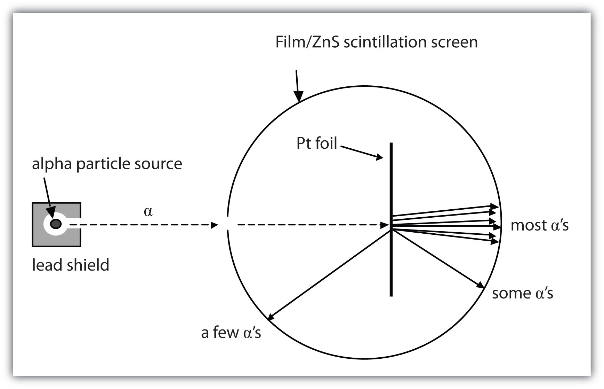
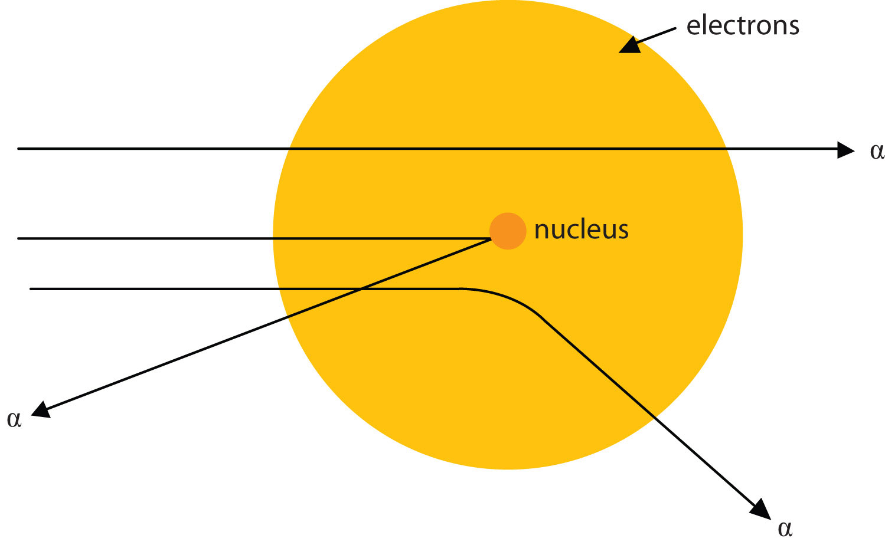
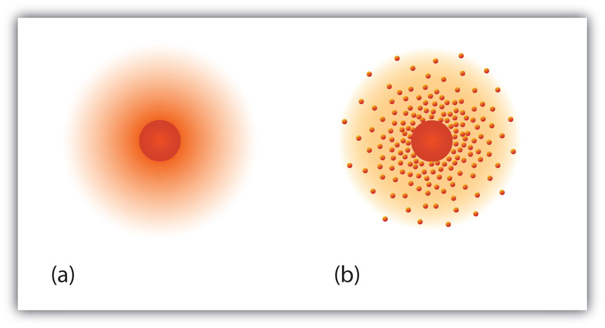

There have been several minor but important modifications to Dalton’s atomic theory. For one thing, Dalton considered atoms to be indivisible. We know now that atoms not only can be divided but also are composed of three different kinds of particles with their own properties that are different from the chemical properties of atoms.
The first subatomic particle was identified in 1897 and called the electronA subatomic particle with a negative electric charge.. It is an extremely tiny particle, with a mass of about 9.109 × 10−31 kg. Experiments with magnetic fields showed that the electron has a negative electrical charge.
By 1920, experimental evidence indicated the existence of a second particle. A protonA subatomic particle with a positive charge. has the same amount of charge as an electron, but its charge is positive, not negative. Another major difference between a proton and an electron is mass. Although still incredibly small, the mass of a proton is 1.673 × 10−27 kg, which is almost 2,000 times greater than the mass of an electron. Because opposite charges attract each other (while like charges repel each other), protons attract electrons (and vice versa).
Finally, additional experiments pointed to the existence of a third particle. Evidence produced in 1932 established the existence of the neutronA subatomic particle with no electric charge., a particle with about the same mass as a proton but with no electrical charge.
We understand now that all atoms can be broken down into subatomic particles: protons, neutrons, and electrons. Table 2.4 "Properties of the Subatomic Particles" lists some of their important characteristics and the symbols used to represent each particle.
Table 2.4 Properties of the Subatomic Particles
| Particle | Symbol | Mass (kg) | Relative Mass (proton = 1) | Relative Charge |
|---|---|---|---|---|
| proton | p+ | 1.673 × 10−27 | 1 | +1 |
| neutron | n0 | 1.675 × 10−27 | 1 | 0 |
| electron | e− | 9.109 × 10−31 | 0.00055 | −1 |
How are these subatomic particles arranged? Between 1909 and 1911, Ernest Rutherford, a Cambridge physicist, and his associates Hans Geiger and Ernest Marsden performed experiments that provided strong evidence concerning the internal structure of an atom. They took a very thin metal foil, such as gold or platinum, and aimed a beam of positively charged particles (called alpha particles, which are combinations of two protons and two neutrons) from a radioactive source toward the foil. Surrounding the foil was a detector—either a scintillator (a material that glows when hit by such particles) or some unexposed film (which is exposed where the particles hit it). The detector allowed the scientists to determine the distribution of the alpha particles after they interacted with the foil. Figure 2.3 "The Geiger-Marsden Experimental Setup" shows a diagram of the experimental setup.
Figure 2.3 The Geiger-Marsden Experimental Setup
Experiments using this setup were used to investigate the structure of atoms.
Most of the particles traveled straight through the foil, but some alpha particles were deflected off to one side. Some were even deflected back toward the source. This was unexpected. Rutherford once said, “It was almost as incredible as if you fired a 15-inch shell at a piece of tissue paper and it came back and hit you.”
Rutherford proposed the following model to explain these experimental results. Protons and neutrons are concentrated in a central region he called the nucleusThe central part of an atom that contains protons and neutrons. (plural, nuclei) of the atom. Electrons are outside the nucleus and orbit about it because they are attracted to the positive charge in the nucleus. Most of the mass of an atom is in the nucleus, while the orbiting electrons account for an atom’s size. As a result, an atom consists largely of empty space. Rutherford called his description the “planetary model” of the atom. Figure 2.4 "Rutherford’s Metal-Foil Experiments" shows how this model explains the experimental results.
Figure 2.4 Rutherford’s Metal-Foil Experiments
Rutherford explained the results of the metal-foil experiments by proposing that most of the mass and the positive charge of an atom are located in its nucleus, while the relatively low-mass electrons orbit about the nucleus. Most alpha particles go straight through the empty space, a few particles are deflected, and fewer still ricochet back toward the source. The nucleus is much smaller proportionately than depicted here.
The planetary model of the atom replaced the plum pudding model, which had electrons floating around aimlessly like plums in a “pudding” of positive charge.
Rutherford’s model is essentially the same model that we use today to describe atoms but with one important modification. The planetary model suggests that electrons occupy certain specific, circular orbits about the nucleus. We know now that this model is overly simplistic. A better description is that electrons form fuzzy clouds around nuclei. Figure 2.5 "A Modern Depiction of Atomic Structure" shows a more modern version of our understanding of atomic structure.
Figure 2.5 A Modern Depiction of Atomic Structure
A more modern understanding of atoms, reflected in these representations of the electron in a hydrogen atom, is that electrons occupy regions of space about the nucleus; they are not in discrete orbits like planets around the sun. (a) The darker the color, the higher the probability that an electron will be at that point. (b) In a two-dimensional cross section of the electron in a hydrogen atom, the more crowded the dots, the higher the probability that an electron will be at that point. In both (a) and (b), the nucleus is in the center of the diagram.
What are the charges and the relative masses of the three subatomic particles?
Describe the structure of an atom in terms of its protons, neutrons, and electrons.
proton: +1, large; neutron: 0, large; electron: −1, small
Protons and neutrons are located in a central nucleus, while electrons orbit about the nucleus.
Which is smaller—an electron or a helium atom?
Which is larger—a proton or an atom of lead?
Which subatomic particle has a positive charge? Which subatomic particle has a negative charge?
Which subatomic particle is electrically neutral? Does it exist inside or outside the nucleus?
Protons are among the (most, least) massive subatomic particles, and they are found (inside, outside) the nucleus.
Electrons are among the (most, least) massive subatomic particles, and they are found (inside, outside) the nucleus.
Describe why Rutherford used the term planetary model to describe his model of atomic structure.
Why is the planetary model not an appropriate way to describe the structure of an atom?
What happened to most of the alpha particles in Rutherford’s experiment? Explain why that happened.
Electrons account for the (majority, minority) of the (mass, volume) of an atom.
An electron is smaller.
proton; electron
most; inside
Electrons are in orbit about the nucleus.
Most of the alpha particles went through the metal sheet because atoms are mostly empty space.